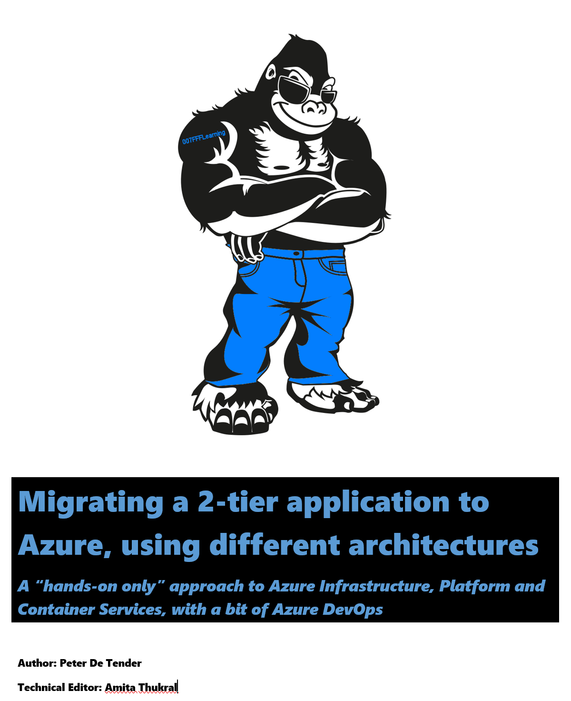

I’m excited about this next project that finally got live, thanks to a bit of quiet time during the Holidays. While it is not up to the full 100% of what I had in mind, I didn’t want to hold back the content any longer, since Azure is moving already that fast…
The original idea of this material was based on a workshop I created for Microsoft Internal (Azure Developer Series) in Sept 2018 as a contractor, which was a combination of slides, videos and lab guides. The workshop existed in both in-person and virtual delivery format. At that time, the sample application was rather basic. Early July 2019, I got asked to work on an update of the content, and extend it with Azure DevOps, which was well-adopted in the market already, but still unknown to a lot. Instead of just working on “updates”, I decided to start from scratch, and work towards a more “business ready” application, using SimplCommerce, an Open Sourced E-commerce platform application, built in .NET / .NET Core, and supporting different database back-ends.
Flipping the presentations and lab guides into a book seemed like an interesting idea at that time.
Talking to several people about this, it became clear that – given the focus on the technical side of the Azure platform, together with the focus on the hands-on aspect of the workshop, most vouched for a hands-on guide, and leaving the ‘speaker notes’ behind. Next, me moving to Microsoft as a full-time employee mid September 2019, was another good reason to shorten the format of this book. It would still take me another 3 months (Christmas Holidays aka slower pace…) to go through all labs again myself, guaranteeing the book was ready for usage, even without having a trainer available to ask questions.
This is the first book I’m doing in self-publishing, and my 6th book overall (see http://www.007ffflearning.com/publications) for more details on the other material I wrote along the years.
The benefit for you as a reader is that you will get continuous updates. Whether these are bug-fixes, additional chapters/lab steps or major updates to existing labs, you will get notified about it. The advantage for me as the author, is that it is probably one of the best ways to publish content on a topic that is as fast moving as Azure.

As always, I hope this book maps with your interests and helps in your journey to Azure. Do not hesitate reaching out or sharing your feedback,
Here is some more info about the actual book contents:
Hands-On-Lab Scenario
You are part of an organization that is running a dotnetcore e-commerce platform application, using Windows Server infrastructure on-premises today, comprising a WebVM running Windows Server 2012 R2 with Internet Information Server (IIS) and a 2nd SQLVM running Windows Server 2012 R2 and SQL Server 2014.
The business has approved a migration of this business-critical workload to Azure, and you are nominated as the cloud solution architect for this project. No decision has been made yet on what the final architecture should or will look like. Your first task is building a Proof-of-Concept in your Azure environment, to test out the different architectures possible:
-
Infrastructure as a Service (IAAS)
-
Platform as a Service (PAAS)
-
Containers as a Service (CaaS)
At the same time, your CIO wants to make use of this project to switch from a more traditional mode of operations, with barriers between IT sysadmin teams and Developer teams, to a DevOps way of working. Therefore, you are tasked to explore Azure DevOps and determine where CI/CD Pipelines can assist in optimizing the deployment and running operations of this e-commerce platform, especially when deploying updates to the application.
As you are new to the continuous changes in Azure, you want to make sure this process goes as smooth as possible, starting from the assessment to migration to day-to-day operations.
Abstract and Learning Objectives
This workshop enables anyone to learn, understand and build a Proof of Concept, in performing a multi-tiered .Net Core web application (SimplCommerce Open Source http://www.simplcommerce.com) using Microsoft SQL Server database, platform migration to Azure public cloud, leveraging on different Azure Infrastructure as a Service, Azure Platform as a Service (PaaS) and Azure Container offerings like Azure Container Instance (ACI) and Azure Kubernetes Services (AKS).
Immediately in lab 1, students get introduced to the basics of automating Azure resources deployments using Visual Studio and Azure Resource Manager (ARM) templates. Next, readers learn about the importance of performing proper assessments, and what tools Microsoft offers to help in this migration preparation phase. Once the application has been deployed on Azure Virtual Machines, students learn about Microsoft SQL database migration to SQL Azure PaaS, as well as deploying and migrating web applications to Azure Web Apps.
After these foundational platform components, the next exercises will totally focus on the core concepts and advantages of using containers for running business workloads, based on Docker, Azure Container Registry (ACR), Azure Container Instance (ACI) and WebApps for Containers, as well as how to enable container orchestration and cloud-scale using Azure Kubernetes Service (AKS).
In the last part of the workshop, readers get introduced to Azure DevOps, the new Microsoft Application Lifecycle environment, helping in building a CI/CD Pipeline to publish workloads using the DevOps principals and concepts, showing the integration with the rest of the already touched on Azure services like Azure Web Apps and Azure Kubernetes Services (AKS), closing the workshop with a module on overall Azure monitoring and operations and what tools Azure has available to assist your IT teams in this challenge.
The focus of the material is having a Hands-On-only Lab experience, by going through the following exercises and tasks:
· Deploying a 2-tier Azure Virtual Machine (Webserver and SQL database Server) using ARM-template automation with Visual Studio 2019;
· Publishing a .NET Core e-commerce application to an Azure Web Virtual Machine and SQL DB Virtual Machine;
· Performing a proper assessment of the as-is Web and SQL infrastructure using Microsoft Assessment Tools;
· Migrating a SQL 2014 database to Azure SQL PaaS (Lift & Shift);
· Migrating a .NET Core web application to Azure Web Apps (Lift & Shift);
· Containerizing a .NET Core web application using Docker, and pushing to Azure Container Registry (ACR);
· Running Azure Container Instance (ACI) and WebApp for Containers;
· Deploy and run Azure Azure Kubernetes Services (AKS);
· Deploying Azure DevOps and building a CI/CD Pipeline for the subject e-commerce application;
· Managing and Monitoring Azure Kubernetes Services (AKS);
At last…,
I also want to thank Amita Thukral, a far-away friend from India, with whom I had the pleasure to work along the years when doing Azure virtual workshop deliveries, where she was moderating the questions from the audience, and overall a very nice and professional person to work with. She did a tremendous job in screening the scenario, going through all lab steps, to make sure it all made sense. Even for less Azure-experienced folks.
If this got your attention, head over to Leanpub, and grab yourself a copy of the book. And start learning Azure :).
Looking forward to your feedback,
best regards, Peter
/Peter